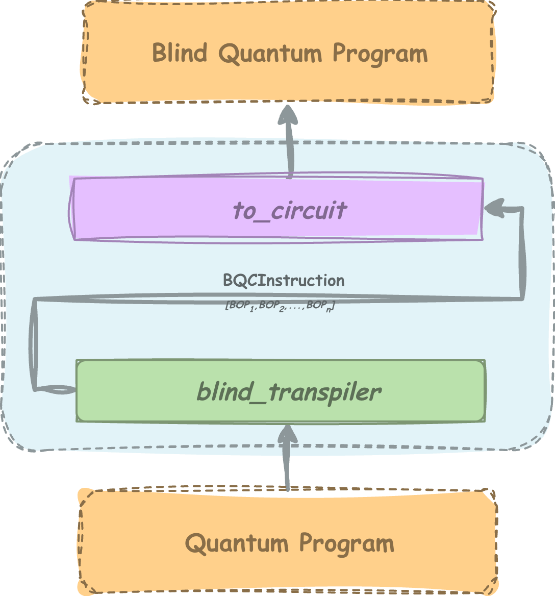
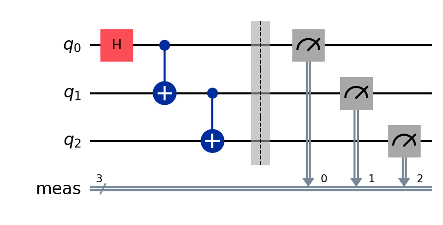

BlindTranspiler Documentation¶
An open-source framework for rapid prototyping of appication and implementation of protocols using quantum homomorphic encryption universal blind quantum computation.
The library takes in the quantum circuit written in Qiskit and converts with according of various algorithm of Blind Quantum Computation (BQC) primitive, which can be delegated to server by limited capability client on client-server architecture. This delegation ensures the security of the client’s data and/or computing algorithm on remote server while execution.
This library enables:
rapid protocol development for application in secure delegated quantum computation
experimental with various blindness models
resource estimation for various blind implementations.
design and validation of new application for secure quantum cloud computing.
low-depth and efficient handling of parametric gates, necessary for varitation quantum algorithms.
What is BlindTranspiler?¶
BlindTranspiler is a research-oriented framework for secure delegated quantum computation.
The library converts standard Qiskit quantum circuits into blind delegated representations using multiple blindness models and delegation protocols.
{kind=link}

The library can implementation four variations of BQC primitives:
Quantum Homomorphic Encryption
Universal Blind Quantum Computation using Recursive Rotation Gates.
Universal Blind Quantum Computation using Ordered Set of Universal Gates.
Universal Blind Quantum Computation using Fixed Rotation Gates.
Why Blind Quantum Computation?¶
Blind Quantum Computation (BQC) allows a computationally limited client to delegate quantum computation to a remote server without revealing:
input data
output results
computation structure
intermediate operations
Blind delegation is an important primitive for:
quantum cloud computing
secure delegated execution
privacy-preserving quantum machine learning
outsourced variational quantum algorithms
secure multi-party quantum computation
BlindTranspiler enables practical experimentation with these protocols in the NISQ era. It natively handles the parametric gates with low-depth circuit
Getting Started¶
Installation¶
Install using PyPI:
pip install blind-transpiler
Basic Example¶
Create a Qiskit circuit:
from qiskit import QuantumCircuit
qc = QuantumCircuit(3)
qc.h(0)
qc.cx(0, 1)
qc.cx(1, 2)
qc.measure_all()
{kind=link}

Perform blind transpilation:
from blind_transpiler import BQC
bqc = BQC()
bqc_instructions = bqc.generate_bqc(qc=qc,format='qhe')
enc_blind_circ = bqc_instructions.to_circuit(const_type='encrypt_only')
enc_blind_circ = bqc_instructions.to_circuit(const_type='complete')
The respective output of the circuits when delegated is:
|
Fig 1 Expected Output from Original Circuit |
Fig 2 Output without proper decryption over 1000 random keys |
Fig 3 Output with proper decryption over 1000 random keys |
{kind=link}
{kind=link}
{kind=link}
This example is elaborated in Quick Start
Acknowledgement¶
BlindTranspiler is developed as part of ongoing research into secure delegated quantum computation and practical blind quantum computing frameworks.
License¶
BlindTranspiler is released under the Apache 2.0 License.
Documentation Pages¶
User Guide